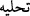

BESMELE
Hanefî mezhebinin sonraki dönem (müteahhirîn) âlimlerince kabûl edilen görüşe göre,
“besmele” nâzil olan her sûreyi diğerinden ayırmak üzre gelmiştir. Sûreye aid olmayan
müstakil bir âyettir. Her hayırlı işe besmele ile başlama teberrük olduğu gibi her sûreye
onunla başlamak da öyledir. Çünkü besmele, Kur’ân’ın anahtarıdır. Levh-ı Mahfûz’da
kalemin yazdığı ilk kelime ve Âdem (a.s.)’a indirilen ilk sözdür. Besmele’nin istiâzeden
sonra gelmesinin hikmeti, “hı” ile olan tahliyenin ( ) “hâ” ile olan tahliyeden (  )
önce olması zorunluluğundandır. Birinci tahliye, boşaltıp temizlemek; ikincisi süsleyip
güzelleştirmek, demektir. Bir mekân boşaltılmadan onarılıp süslenemiyeceği için, kalb
önce istiâze ile mâsivâya yönelmekten temizlenir ve ondan vazgeçirildikten sonra,
besmele ile Allah’a yöneltilerek tezyîn edilir.
Vaktiyle müşrikler, bir işe başlarken tanrılarının adını anarak: “Bismi’l-Lât ve’l-
Uzzâ” derlerdi. Müşrikler böyle yaparsa, tevhid ehli müslümanın bir işe başlarken
Allah’ın adını anması elbette gerekir. Besmelenin işe başlamadan önce olması lâzımdır.
Bir bakıma Kur’ân okumaya başlarken besmele çeken insan: “Allah’ın adıyla
başlıyorum” demektedir. Diğer fiillere başlarken çekilen besmele de, o fiile Allah’ın
adıyla başlamak demektir.
Bâzı âlimler demiştir ki: “Bütün ilimler “Bâ” da toplanmıştır. “Bâ” dan maksad
“Bî”; yâni “Benimle; Allah ile” demektir. Olan ve olacak olan herşey benimle olduğu
gibi, âlemlerin varlığı da benimledir. Benden başkasının gerçek vücûdu (varlığı) yoktur.
Diğer varlıklara vücûd isnâdı, isimle ve mecâzîdir.” Bu düşünce: “Ben baktığım eşyada
ve ondan öncesinde Allah’dan başka bir şey görmem” sözünün ve Hz. Peygamber
(s.a.)’in “Dehr’e sövmeyin, dehr Allah’tır.”[139] hadîsinin mânâsına uygun düşmektedir.
Birisi kalkıp: “Allah Teâlâ’nın kitâb-ı ilâhîsine “Bâ” ile başlamasının ve “Bâ” yı
diğer harflere, özellikle de “Elif” harfine tercih etmesinin sebebi nedir? Niçin “Allah”,
besmeledeki “isim” kelimesinin başında bulunan elifi düşürmüş ve onun yerine “bâ”yı
koymuştur?” şeklinde bir sual soracak olursa, ona şöyle cevap verebiliriz:
– “Allah Teâlâ’nın Kur’ân’a; yâni besmeleye “Bâ” ile başlamasının on hikmeti
vardır. Onlar sırasıyla şunlardır:
1. “Elif” harfinde yükseklik ve uzunluk; yâni azamet vardır. “Bâ”da ise yere yayılma,
tevâzu ve kırıklık vardır. “Allah, kendisi için tevâzu göstereni yüceltir.”[140]
2. “Bâ” harfinde ayrı yazılan harflerin; özellikle de elifin zıddına, başka harflerle
bitişme özelliği vardır. “Bâ”; kendisinden önce ve sonra bulunan harflere bitişir.
3. Besmeledeki “Bâ” meksûrdur; yâni harekesi esredir, meksûr ise kırık demektir.
Yazılış ve anlamında kırıklık bulunması, Allah ile beraber bulunma şerefine daha
lâyıktır. Çünkü hadis-i kudsîde Allah Teâlâ: “Ben, benim yüzümden gönülleri kırık